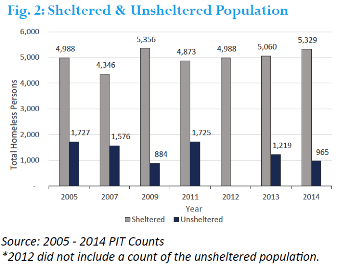
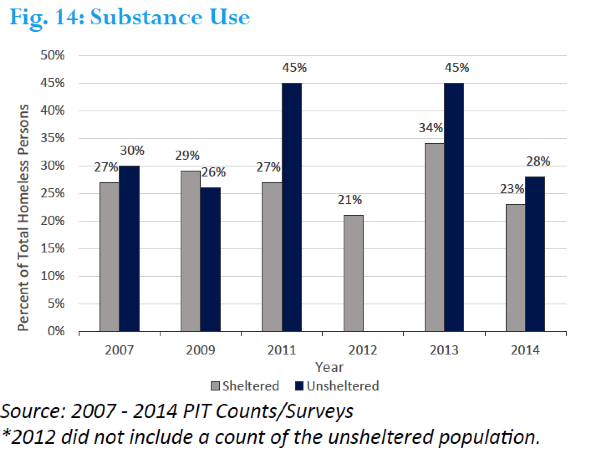
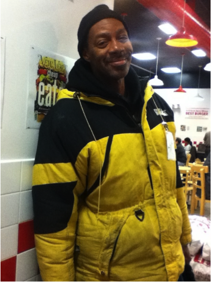

Homelessness poses a significant burden on the South Side of Chicago and is a primarily socio-economic problem attributed to a lack of affordable housing and low wages. High cost of living, unemployment rates and low-wage jobs force individuals to choose among food, housing and other expenses. According to the U.S. Department of Health & Human Services’ 2015 guidelines, poverty line incomes are set at $11,770 for one person, and $28,410 for a family of five. Englewood, a neighborhood directly west of the University of Chicago’s campus, has a per-capita income of $11,993.

It then surprises no one when they are told that the South Side of Chicago is home to a large proportion of Chicago homeless. But who are the homeless, and what are their stories? The Maroon asked both former and currently homeless individuals about their experiences, and performed an investigation into what students are currently doing to combat homelessness.
The City of Chicago, through the Department of Family and Support Services, conducted its latest Homeless Count & Survey on the night of January 22, 2014, during one of the most severe winters in the history of Chicago. Despite constant frostbite and hypothermia warnings, and consistent subzero temperatures, the number of homeless individuals that remained unsheltered hardly dropped compared to previous year.
According to a January 23, 2014 WBEZ article which covered the count, some people consider their street space as their home and would rather live through harsh weather to keep it. One unnamed volunteer in the article mentioned a couple that she met during the count. “She had a dustpan and a broom. And she was sweeping the debris to keep the rats away, keep the area clean. And I remember [the male partner] saying ‘yeah, she does this because this one of the few places that we’re able to stay. And we don’t want to create a situation where they would make us leave’”.
Pierre Tatum, a 54 year old African American man and Chicago native who has been homeless since 2003, also expressed a similar feeling of ownership for his part of the street. “I’m a street vendor, and I have a spot on 53rd and Blackstone where I sell stuff from down the alley or people that donate to the 2nd Faith Church”. Prior to 2003, he was an employee at a warehouse before the company moved to California. After his father passed away, the building in which he lived was vacated due to structural damages which had not been addressed, and he has been without a home ever since. He filed a liable suit against the federal government for forcing him into homelessness. However, he claims that, given his circumstances, it is more financially beneficial to remain on the streets. “My father’s attorney said ‘Me, personally? I would stay outside because you’ll get more money….if you’re working and over the poverty level, you’ll lose dividends from the court.’ By me not having a home, I could not get a steady job because I don’t have a permanent address.” The suit is still on-going.

Tatum’s path from employment to chronic homelessness is a common one. “Prior to becoming homeless, I had my own business. I was making ten million dollars a year in sales, selling clothes, jewelry, cologne, you name it” said Gerald Casey, who is the Director of Outreach and Volunteer Coordinator for Pacific Garden Mission, which is an emergency shelter located in East Pilsen. While a student at Olive-Harvey College, Casey was a business and accounting major. He opened up a successful sales business that took a turn for the worse in July of 2005, when his life spiraled out of control. “I lost everything I had…my marriage went south on me, my teenagers were acting up, and I had fallen into a state of depression”. His grandmother and first wife, whom he was very close to, also passed away during that time. He describes the experience as lonely: his family and children kept their distance from him after trying numerous times to help. Resorting to drinking, marijuana and crack cocaine as means for coping, Casey said that substances are common resorts utilized by the homeless because of how culturally ingrained their use is. Furthermore, physical and sexual abuse during childhood, Casey said, is a common past experience shared among many that come to the shelter: particularly, ones of an incestuous nature. “I was sexually molested as an infant by my auntie, my female cousin and my uncle. Furthermore, beer was placed in my baby bottle to put me to sleep at times. So, you know, by the time I was 10 years old…as a kid growing up you see your adult peers drinking…and you want to be grown and like them.” He said that many utilize substances as a means to escape the hardships of the past and present.

Casey was homeless for a year before finding a home at Pacific Garden Mission. The transition from business owner to shelter-seeker was excruciating, and Casey said that most homeless individuals are almost never seen in public areas because they are embarrassed by their situation. “I didn’t want to be [at Pacific Garden Mission], because my view of Pacific Garden Mission was that it was a place for bums. My pride ran so strongly in me, telling me ‘I’m not a bum’, but I was one…I just couldn’t lower myself to coming there” Casey said. Though he was able to climb out of his depression with the help of Pacific Garden Mission, many at the shelter have much more debilitating mental illnesses which confine them in perpetual homelessness. “Out of about 850 homeless at our shelter, about 300 have severe mental illness…bipolar, schizophrenic, manic depression” Casey said. “And that’s because our previous Governor, Patt Quinn, closed down all the facilities. So where are they to go?”
Arlene Roberts, is a current resident at Pacific Garden Mission, who is a 52 years old former nursing home assistant, and has been homeless for 3 years following a domestic dispute with her husband. Originally from Rockford, Illinois, Roberts says that even though she does not have any substance abuse or mental health issues, her lack of a state ID resulted in her three years of unemployment. “In the summer, I used to stay at my bench at Harold Washington Park, but I’ve been staying at the Mission because it’s safer for a woman, because there’s a lot of rape and crime here” Roberts said. “I’ve been robbed and everything, but I can’t let that stop me. I got to live on, and I feel like something good’s about to happen”. She said that she recently acquired a social worker who will be helping her find a studio apartment as well as employment. When asked about other homeless individuals that the Maroon interviewed, such as Jeff and Georgia, her face lights up as if family members were mentioned. “Georgia! Yeah, and Jeff!” Roberts said, “I know all of them”.
– Jeff, 59 years old, 53rd and Dorchester

-Georgia, 56 years old, 53rd and Blackstone.
Of the homeless individuals interviewed, none could recall a student group which provided consistent help to the homeless population. The Maroon spoke with Elizabeth Weigel, who is the Associate Director of Calvert House and advisor for The Homeless Food Run, which appears to be the only student organization dedicated solely to helping the homeless. Founded in 2002, The Homeless Food Run delivers food on Tuesday evenings, which they drive to various locations via a service truck. “On average, 10 students a week, and [each week there are] different students. There are maybe 2 students there, all the time, running it…and sometimes they do extra runs when fraternities and sororities contact us to do service projects” Weigel said.
She said that The Homeless Food Run, as well as other groups such as Christian Intervarsity on campus, which does food runs, Hyde Park Food Pantry, and The Living Room Café not only address homelessness but food insecurity in general, which is a problem that is applicable to both those who are homeless and in poverty. “There’s a lot of people who are food insecure, and there’s a lot of resources for people like that.” Weigel said.
Despite some student involvement in food runs, Weigel feels that there may not be as big of a culture of service on campus at the University of Chicago. “We do get surges of people, but it’s typically to fulfill hours either for their fraternity or sorority…it isn’t something that’s like ‘all my classmates are doing it, and we feel compelled to do it’” Weigel said, though she recognizes that there are many programs which students are actively involved in, such as Summer Links, which works with non-profits over the summer, and Neighborhood Schools Program. However, she feels there could be more community-centered involvement from students, especially since the campus is situated so closely to the poorest south side neighborhoods.
“Students could help us with bus passes or clothes during the winter, so we can change our clothes. And toiletries” Roberts said, suggesting that these could be more useful than the occasional dollar, which can be acquired from donations to shelters.
“One of my dreams is to have a student soup kitchen/whatever the need is in the neighborhood…like a student run shelter.” Weigel said. She believes that there are churches in Hyde Park that are looking for ways to serve the community, and could be close enough for students to open a shelter.
“Some of the SSA students could help with people who need housing or [solving] questions that may be difficult to answer. Some of the funding could come from the University and donations come from students. Think of all the dorms, old apartments or stuff that people don’t want!”